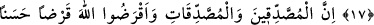

KALPLERİNİN ÜRPERMESİ ZAMANI
DAHA GELMEDİ Mİ?
16. Îman edenlerin Allah’ı anma ve O’ndan inen Kur’an sebebiyle kalplerinin
ürpermesi zamanı daha gelmedi mi? Onlar daha önce kendilerine kitap verilenler
gibi olmasınlar. Onların üzerinden uzun zaman geçti de kalpleri katılaştı. Onlardan
birçoğu yoldan çıkmış kimselerdir.
17. Bilin ki Allah, yeryüzünü ölümünden sonra canlandırıyor. Gerçekten size
âyetleri düşünesiniz diye açıkladık.
18. Sadaka veren erkeklere, sadaka veren kadınlara ve Allah’a güzel bir ödünç
verenlere verdiklerinin karşılığı kat kat ödenir. Onlara değerli bir mükâfât vardır.
“Îman edenlerin Allah’ı anma ve O’ndan inen Kur’an sebebiyle kalplerinin
ürpermesi zamanı daha gelmedi mi?” Huşû, tevâzû ve boyun eğmek demektir. Âyet-i
kerîmenin mânâsı şöyle olur: Allah’ın zikri için kalplerinin ürperip yumuşayacağı ve
onunla huzûra ulaşacağı, emirlerine uymak ve kendilerine yasaklanmış olan şeylerden
kaçınmak sûretiyle hiç usanmaksızın ve gevşeklik göstermeden O’na itâat için
koşacakları vakit henüz gelmedi mi?
Âlimlerin bazıları şöyle demiştir: Âyette geçen zikir Kur’an değilse mânâ şöyle olur:
Allah Teâlâ zikir edildiği zaman kalplerinin incelip yumuşama zamanı gelmedi mi?
Çünkü Allah’ı zikr etmek kalplerin yumuşama sebebidir. Bu takdirde zikir mef’ûlüne
muzâf, lâm ise vakit mânâsında olur. Zikirden maksad Kur’an ise, bu takdirde de zikir
fâiline muzâf olup lâm sebep içindir. Allah’ın Kur’an’da zikrettiği vaaz ve nasihatler ve
ondan okunan âyetleri için kalplerinin incelip yumuşama vakti gelmedi mi? demek olur.
Farsça ifâdesiyle: “Îmân edenlerin, Allah’ın zikriyle kalplerinin saygı ve korku ile
yumuşaması için zaman hâlâ gelmedi mi?”
“Haktan inen” cümlesindeki inenden maksad Kur’an’dır ve cümle “Allah’ın zikri”
lafzına atfedilmiştir. Âyetteki zikirle yine kendi kasdedilmişse bu atıf iki ünvanın